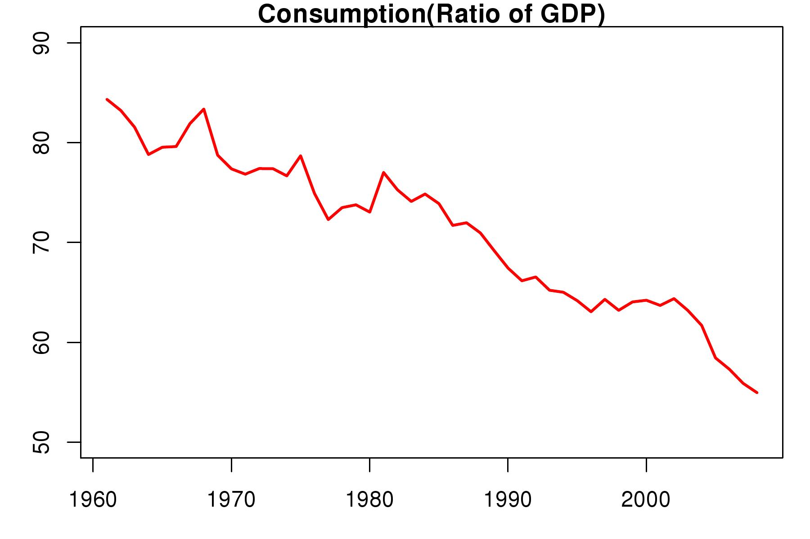
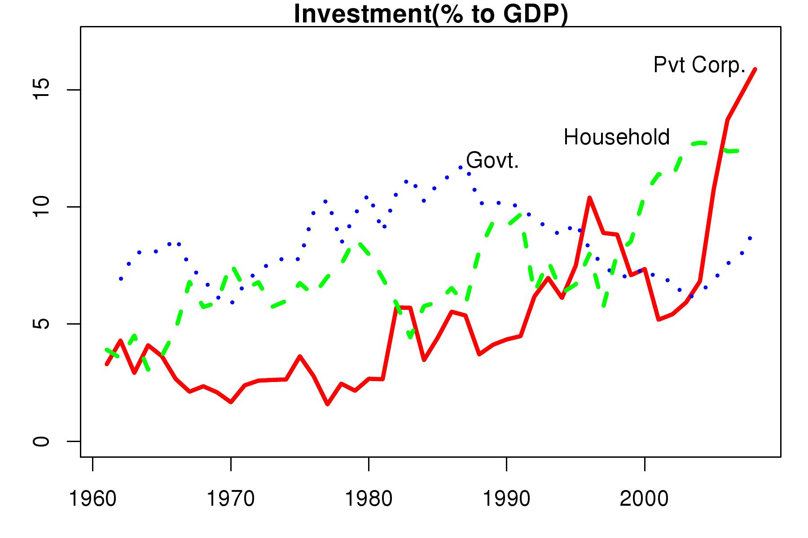
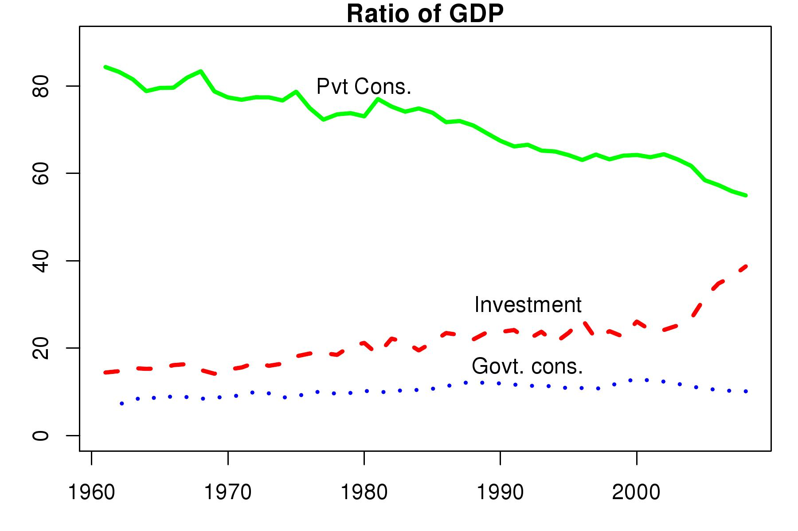

Recipe for an investment shortfall
Financial Express, 16 March 2009
Recent GDP growth numbers suggest that there has been a considerable slowdown in growth. So far a large part of the slowdown can be explained by the decline in world demand and the impact it has had on Indian exports. Looking forward the question of whether domestic demand can compensate for the near zero export growth remains to be answered. While India has had strong domestic demand, we see that this has mainly due to the sharp rise in private investment. Since private investment is driven by confidence, expectations and profit levels, we may see this decline sharply in the coming year. But will not the increase in public investment compensate for this decline and put Indian GDP growth back on track? The numbers are not very encouraging. It will be difficult for the government to compensate for the decline in private investment even assuming that household and corporate investment only go down to trend levels, and do not fall further.
In recent years there has been a sharp decline in the ratio of consumption to GDP to 55 percent in 2008-09. This decline has been missed by most of us and we continue to think that in India, as was the case before 2002, the ratio of consumption to GDP has remained above 60 percent. The assumed high ratio is often compared to China where this ratio is 48 percent. Figure 1 (Consumption(Ratio of GDP) shows that in the period of rapid economic growth after 2002 this ratio has dropped sharply. This should be kept in mind when discussing the drivers of growth such as the large rural market or the Indian middle class that some people seem to expect will keep India growing fast.
What has driven high economic growth since 2002 is the sharp rise in investment. As seen in Figure 2 (Ratio of GDP) while private consumption has fallen, government consumption has remained more or less stable, showing a small decline. It is investment that has risen sharply as a ratio of GDP. The sharp rise in investment has been the driver of the high GDP growth rate of 8-10 percent seen since 2002.
 There are three data series available for investment. These are Private Corporate Investment, Household Investment and Government Investment. Figure 3 (Investment (% to GDP)) shows each of these series expressed as a ratio to GDP. Since 2002 both components of private investment, i.e, private corporate investment and household investment grew very sharply. The big story is clearly private corporate investment. It grew from an average of 5 to 6 percent of GDP to 16 percent of GDP in 2008-09. It reached unprecedented levels never seen in India's history before. What is striking is that right until the mid-nineties it was significantly below government investment. It was only after 2003 that it rose above government investment and stayed above it.
Household investment mainly consists two components - the first is housing and the second is investment by the informal household sector. In the figure we see a sharp increase in household investment since 2002. This could be due both to the housing boom and to informal enterprises that witnessed high growth with investment growth in corporate India.
What does the above data suggest for the coming year? First, it is difficult to imagine that in the midst of this slowdown private investment will be sustained at last years levels. If corporate and household investment go down fom their current levels 16 and 12 percent of GDP respectively to trend levels of roughly 8-10 and 6-8 percent, there will be a sharp decline in investment of the tune of about 10 percent of GDP. There is no way that the government can expand its investment to compensate fully for this fall in private investment. At best, it will try to increase investment by 4-5 percent of GDP. This will mean that there will still be a sharp decline in total investment as a ratio of GDP at least by 4 percentage points. A decline like this is bound to have a sharp impact on GDP growth.
Back up to Ila Patnaik's media page
Back up to Ila Patnaik's home page